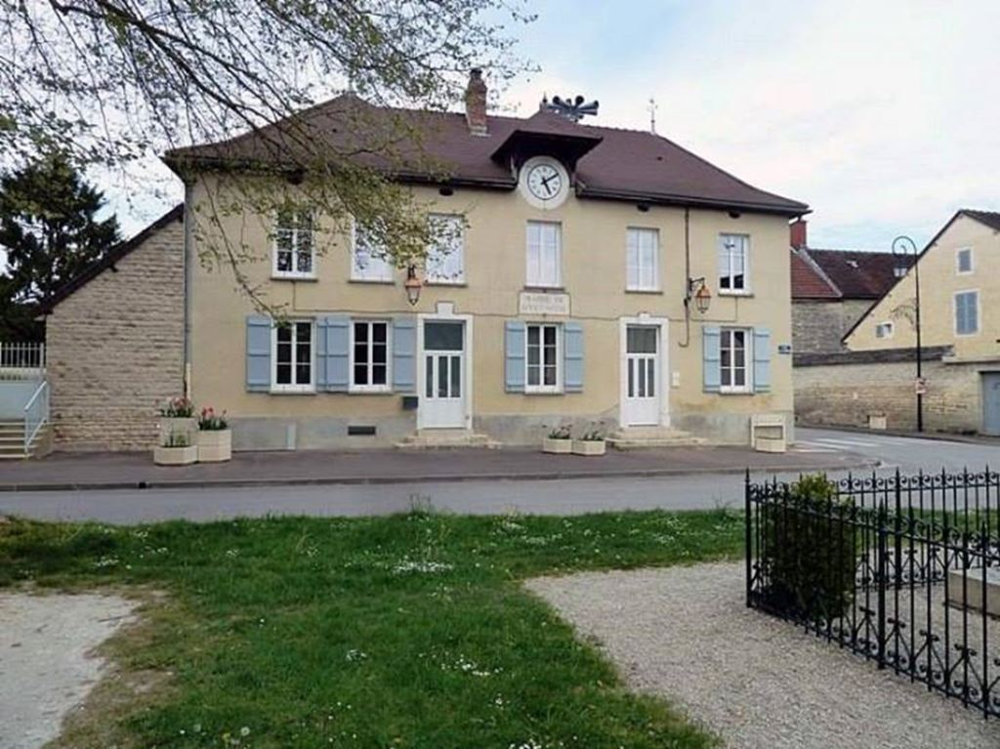
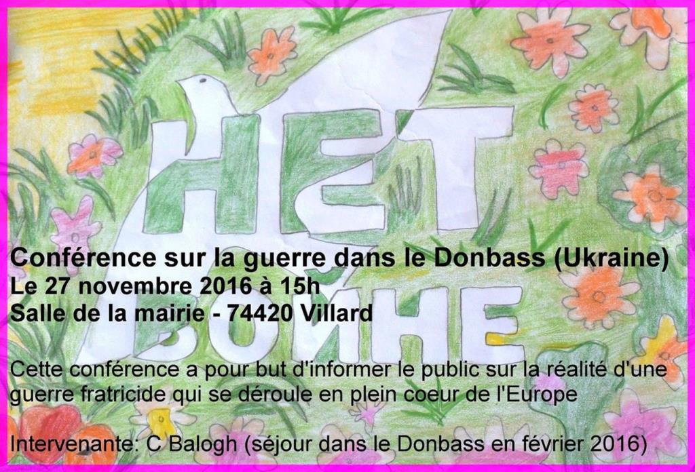
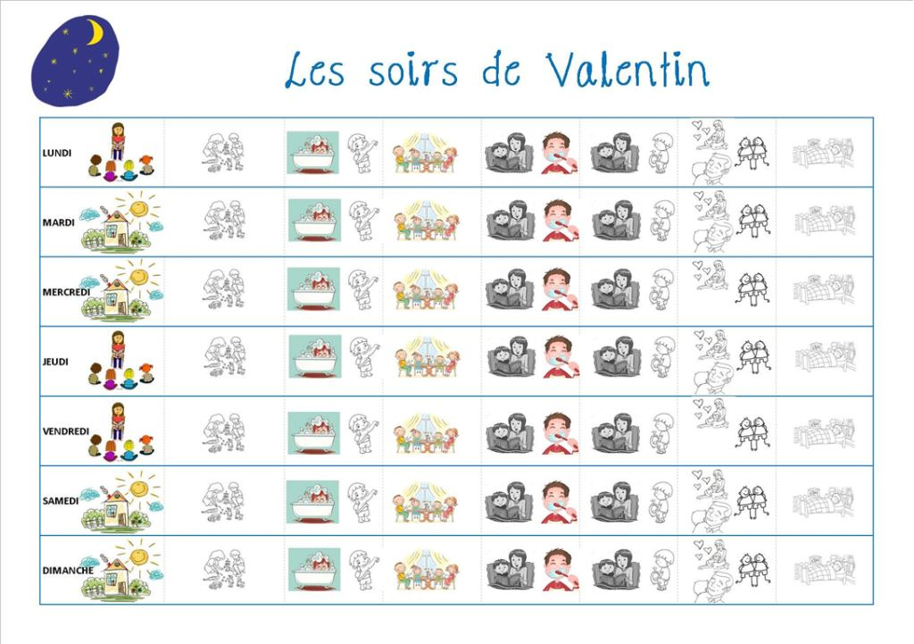

Catherine Balogh : Je suis née en 1963 dans un petit village de Champagne-Ardennes en France. Fille de réfugiés politiques hongrois de 1956, j'ai dès mon plus jeune âge eu affaire avec le mot « propagande » et avec des réflexions élaborées sur notre monde. J'ai toujours aimé la langue française et reçu de nombreux prix à cet égard dans mon enfance.

École de Catherine dans son village d'enfance
E. S. : Quel fut votre premier livre préféré ?
C. B. : Mes parents tenaient à nous apporter une culture riche et mon premier livre d'adolescente fut « Les raisins de la colère » que mon père m'a quasiment obligée à lire. Il faut dire qu'il n'a pas eu besoin de forcer car j'ai toujours aimé lire et savait lire à l'âge de 5 ans.
E.S. : Venir au Donbass est aujourd’hui considéré comme un acte engagé. Avez-vous toujours été aussi active ?
C. B. : J'ai toujours été une militante, du plus loin que je me souvienne. Dans les années 80, j'étais très engagée contre le nucléaire, la centrale de Nogent sur Seine, tout près de chez moi, nous a vu, moi et mes compagnons de lutte, tenir « le pavé » mais les lobbies, déjà à cette époque étaient les plus forts. Par la suite, j'ai construit ma vie comme tout un chacun, devenant mère mais m'étant fait la promesse de reprendre la lutte un jour.
E.S. : Catherine Balogh connaissiez-vous la situation dans le Donbass avant de venir ?
C. B. : Je me suis toujours tenue au courant de l'actualité du monde, me permettant de jeter un regard ouvert sur les évènements. Je suis venue pour un premier séjour dans le Donbass en février 2016, la tragédie d'Odessa m'ayant motivée à venir et à rapporter un témoignage, j'ai découvert des gens courageux, positifs malgré la guerre et sans haine et je me suis promis de revenir.
E. S. : Dans quel domaine de l’enfance vous êtes-vous spécialisée ?
C. B. : Ayant passé ma carrière (25 ans) à m'occuper de personnes porteuses de handicaps divers, je me suis spécialisée dans la prise en charge de l'autisme et même si je n'ai pas pu passer tous les diplômes que j'aurai aimés car mère célibataire, je bénéficie de nombreuses formations et d'une longue expérience auprès de ce public.
Scénarios sociaux en vue d'adapter un bon comportement
E. S. : C’est donc plus spécifiquement pour les enfants autistes que vous êtes venus dans le Donbass ?
C. B. : Oui, après avoir constaté que dans le Donbass comme dans beaucoup d'autres endroits, les enfants autistes ne bénéficiaient pas de prise en charge spécifique, je suis venue prêter mes compétences à ces enfants « pas comme les autres » et j’ai le projet d'apprendre la langue russe puis de former des gens à la prise en charge spécifique de l'autisme.

Programme adapté aux enfants
La plus grande difficulté étant que cette prise en charge comporte des volets qui peuvent sembler aux gens non avertis, quasi militaires et de « dressage », mais les résultats sont là et cette prise en charge apporte réellement un confort aussi bien aux enfants qu'à leurs proches, et leur permettent, dans la plupart des cas d'avoir une vie meilleure. J'ai plusieurs passions, l'écriture, la photographie et mon métier.
E.S. : Merci Catherine Balogh, pour cette entrevue, pour les enfants et pour leurs parents. Soyez la bienvenue à Donetsk.
Partager cette page